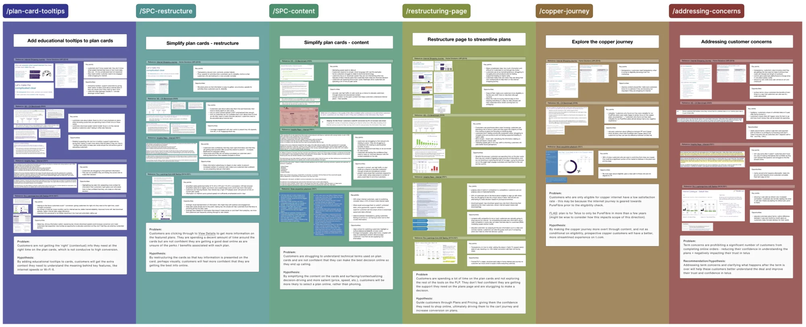
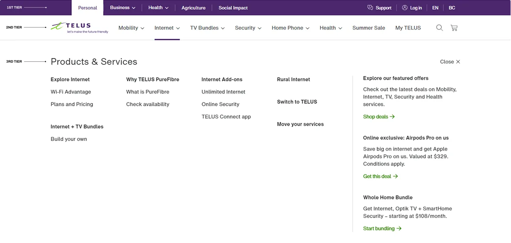
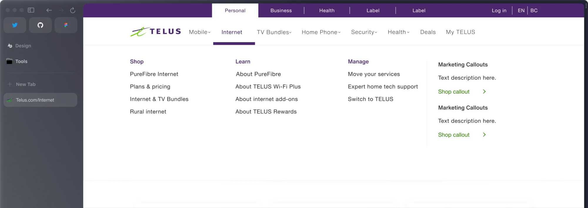

Telus: Enterprise IA Refresh
All Purpose Creative was a preferred vendor for Telus, Canada's second-largest telco. This is one of two projects from the same retainer to increase internet sales on their e-commerce site: this one covered wayfinding, the information architecture inside the meganav, and the other covered educating customers on the plans page. The brief was to design a wayfinding system that helped convert prospective customers to Telus internet products through the 'meganav'.

Ask
Telus's internet and mobile plan browsing journey was buried several layers deep in the site's legacy navigation, causing drop-off before customers ever reached pricing or plan comparison pages. We were brought in as a third-party design team to assess potential directions to circumvent the issue, which meant working with their internal design teams and the sales team that brought us on as a key collaborator.
Insights
When auditing the existing menu and site architecture for the internet flow, it was clear that there were a number of pages surfaced earlier than they should be, which clouded the overall experience even before clicking through.
One of our studies surveyed 23 internet buyers across B.C. and Alberta. Google search and word of mouth were the main ways people researched plans, and price and reliability came up in almost every answer. Several described the same frustration in different words: marketing jargon, unclear speeds and hidden fees. Ten of the 23 weren't the person who managed the household's internet, which mattered for a menu: the person navigating wasn't always the person who knew what the household needed.
After extensive research (card sorting, user interviews, A/B tests), the other researcher and I restructured the menu and tweaked the content, so the flow was simplified. This meant the pages were more purposeful for the audience they were trying to attract (like prospective internet customers identifying more with the Learn menu items compared to the Manage section).
We identified Telus's customer needs for menu items and labelled them as follows:
- Recognisable labelling: customers needed to know what they were 'getting themselves into' when clicking on a menu item
- Easy to use: seeking an intuitive experience on desktop and mobile, rather than flipping between pages to wayfind
- Matching expectations: they were satisfied with the information on the page that is linked to the menu item they select
The review rounds showed the same thing. Interest-holders questioned labels one at a time: whether customers would understand 'Move your services', whether 'Plans and pricing' said the same thing twice, and whether the PureFibre brand name in a link helped or just repeated itself. Rather than settle these by opinion, we put each label to a test.
What I learned A menu is a set of promises to the user. Most of the drop-off here came from labels taking on more than they could and being too specific. The real work was deciding what each item was promising, and organising them for scannability.
Contribution
- Audited the existing navigation and mapped every drop-off point in the internet sales journey, assessing the click-through rate of each menu item
- Restructured the site IA to focus more on action-based interactions at a higher level
- Partnered with a user researcher to run usability testing and, eventually, A/B tests validating the new structure pre-launch
- Recommended extending the same labelling approach to mobile, where the menu had to carry more meaning in less space
Tools
Validation
Before launch, the new menu went through usability testing with the research team, then A/B testing against the existing navigation. The tests measured the same thing the project was built for: click-through from the menu to the plans page, and visits to the pages that help people choose.
Every recommendation was tested and staged before going live. Where we were more confident and the idea was grounded in Telus's existing research, we A/B tested it; otherwise it went to user testing. Each went through the same phases: discovery, design, client review, test set-up, then the test itself, with a go/no-go decision before development.
Results
Plans Page from the menu
page visits after launch
Media
Here are some key artefacts from the project, with captions explaining each of them.


